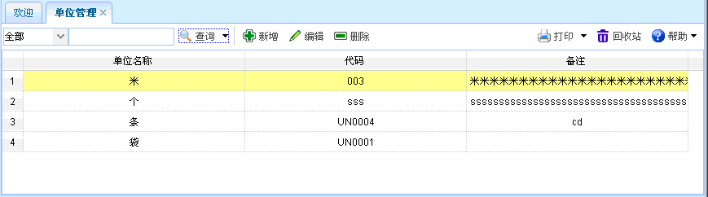
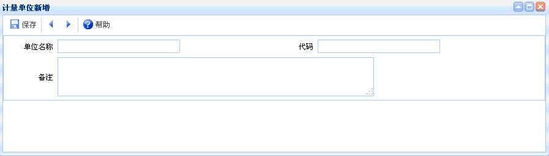
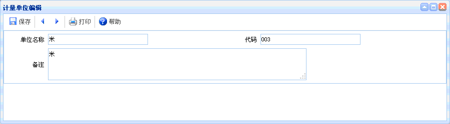

单位管理
单位管理
概述：主要是对产品的标准单位进行的维护。
功能介绍：点击【单位管理】进入单位管理页面，如下图所示。功能主要包括：查询、新增、编辑、删除。

图表6-x3-1【单位管理】
图表6-x3-1【单位管理】
【查询】：通过设置查询条件，查询出符合条件的单位管理信息。
【新增】：点击新增按钮，如下图所示。新增完毕，点击保存。

图表6-x3-2【计量单位新增】
图表6-x3-2【计量单位新增】
【编辑】：选中某项单位管理信息，点击编辑按钮后，出现如下图所示内容。进行编辑操作。

图表4-x3-3【计量单位编辑】
图表4-x3-3【计量单位编辑】
【删除】：选中某项单位管理信息后，点击删除，即可删除该单位管理信息。
 常见问题
常见问题
1、？
2、？
3、？